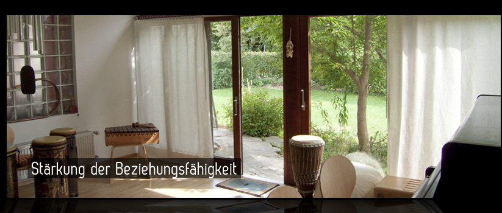
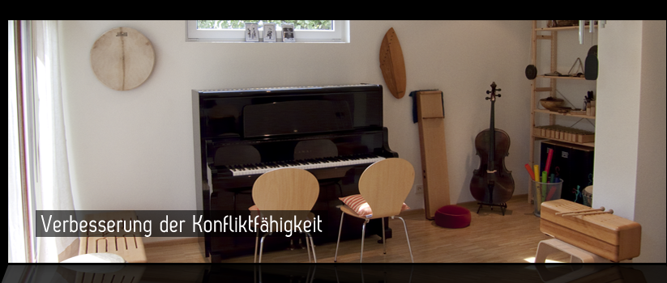
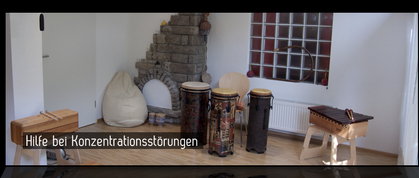

Musiktherapie Backnang
home
über musiktherapie
angebot
zur person
kontakt



Praxis für Musiktherapie
Herzlich Willkommen auf der Webseite der Diplom-Musiktherapeutin Irene Rettenmaier!
Aktuelle Angebote
Musiktherapie bei Kindern und Jugendlichen mit Migräne
Praxis für Musiktherapie
Seelacher Weg 53
71522 Backnang
Telefon: 07191/22 79 56
info@musiktherapie-rettenmaier.de
www.musiktherapie-rettenmaier.de